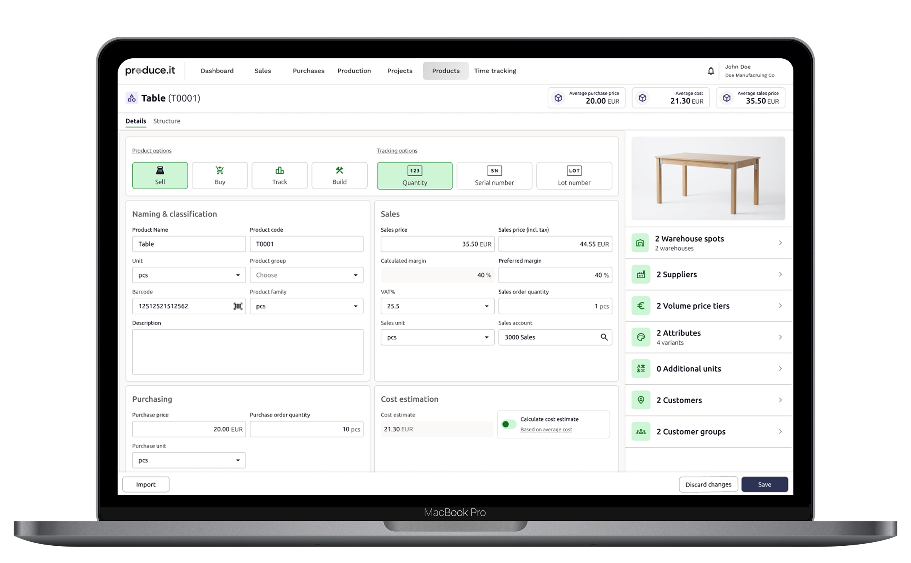
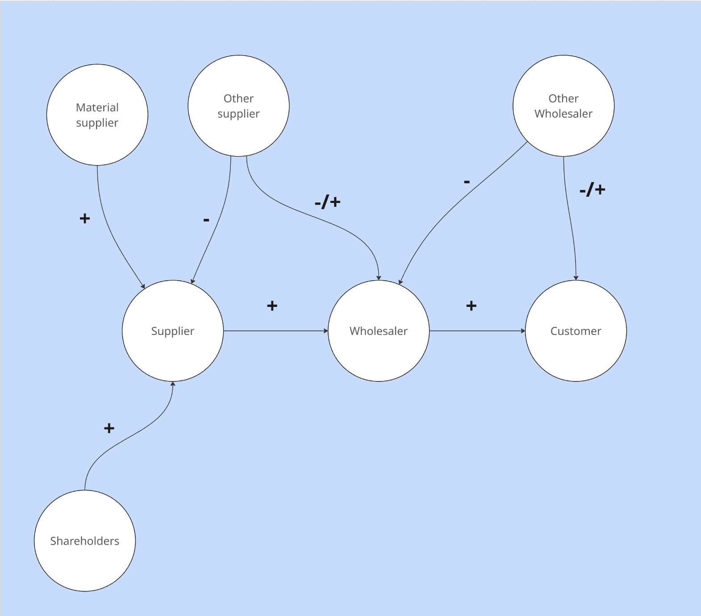
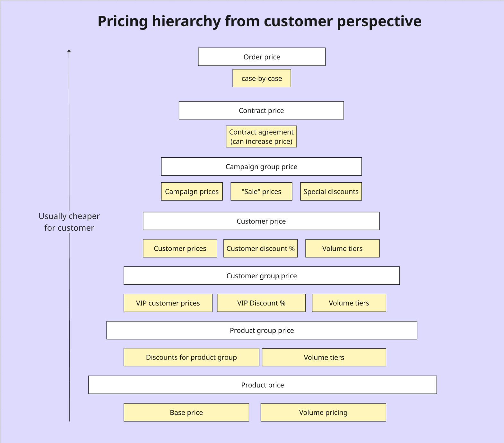
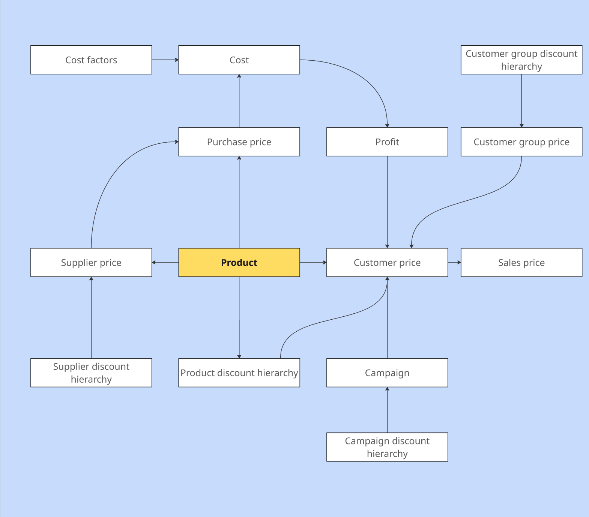
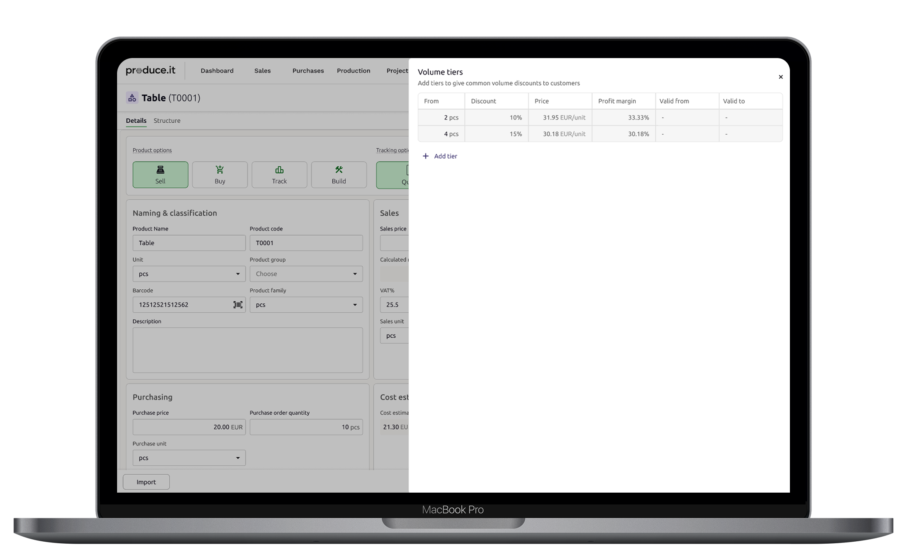
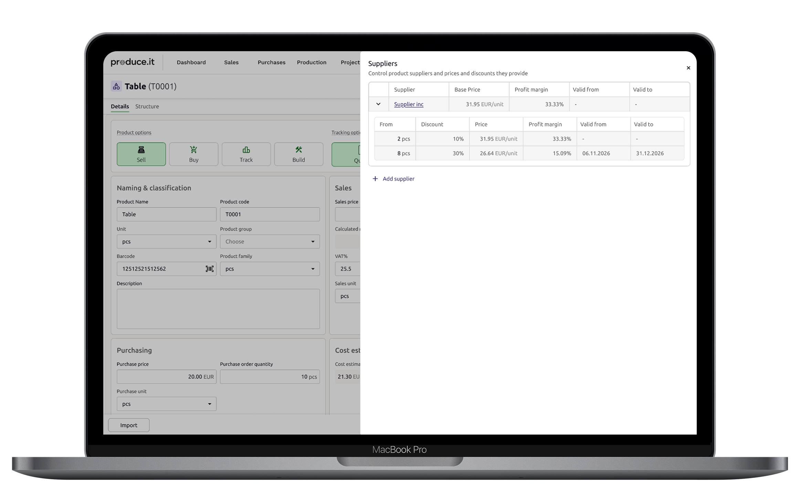

Qualitative research
Conceptualization
Collaborative workshops
Information architecture
System design
Usability testing
UX designer (me)
Product owner
Business analyst
Technical architect
“This has been done before!” I’m not familiar with the development cycles of legacy products, but I usually feel they stumbled upon a solution after failing enough times. Then at some point a competitor figured something out and the others rushed to copy it.
A setup like this calls for a strategic, outcome-oriented approach. There were a lot of strings to hold together. This project is a good example of a case where solving the problem is what really matters, not the visuals.
We found ourselves in a situation that many competitors had built a way to manage the prices of products in the wholesale sector, and we hadn’t. Well, not well anyway. The obvious answer was to check out what they had done. It was not pretty.
The working name for the problem was “how to do pricing in our program”. (?!!)
I’m not familiar with the development cycles of legacy products, but I usually feel they stumbled upon a solution after failing enough times. Then at some point a competitor figured something out and the others rushed to copy it. No one really understood why it needs to be like it is, but the other product did it like this and it makes sense, sort of.
We could of done what everyone else did, create a system that functions but all the users remember to mention when talking about their pain points. But that would’ve been a short term solution for a baseline problem.
Starting out research with the objective named as “doing pricing” or whatever, was a challenge in itself. I mean, we’ve had pricing since before I was working with the product. Just not the “right kind of pricing”.
I’ve been doing interviews with wholesale companies for some time and one of their main problems was always managing the huge amount of product prices, discounts, price updates, price sources, and profit influences. Not something that is easily managed without a proper system. At that time, this still troubled me, I knew I was missing something.
This is not one of the cases where I interviewed one customer and the whole thing just clicked.
This was what you might call a wicked problem where everyone sees the problem differently. Customers talked about having to update prices every year, because multiple suppliers sent a catalogue of new prices with pricing tiers once a year, just before the year changes. Feature requests from customers where coined with the specific problem of volume pricing. The product manager sometimes talked about updating prices and the next time about giving discounts based on an attribute. Someone from the other team talked about “the main price list”.
I was lost.
What I ended up having was more than enough data points but no insights. Solving one problem wouldn’t have solved the whole picture, and I knew it.

Simplification of the price relationship model ( + = showing relationship increasing price, - = showing relationship decreasing price)
First of all, AI did not solve the problem alone. Secondly, this was one of the best examples of how AI doesn’t need to solve the problem, but can help connect the pieces together which you have, but don’t know how to stitch together.
I didn’t quite know what I had and I couldn’t use the normal approaches of designing a study to figure out a specific challenge, when the problem itself couldn’t be named. Therefore, I need to improvise. I’ve long been fantasizing of a system one might call “continuous discovery” which creates a self feeding loop of data and insights. Data points arrive seemingly on their own into a research repository and each piece fills or reinforces the complete picture of the system, making it easy to discover new insights by simply asking the right question. Here I didn’t have it, but I had something close..
When multiple different things had been said, I was able to feed them to an AI, which was able to use it’s knowledge of the subject to join pieces together to create the whole picture I needed. Together with the PM we ruled out creating of the pricing strategy from our system and focused on managing the decisions made. With the help of AI I was able to join the rest and make an analogy out of it. We called it the price management hierarchy.
The price management hierarchy helped me understand that there is a certain hierarchy to pricing decisions. You won’t give just anyone the same discount you give to your VIP customer and you won’t charge more than the common volume discounts say.
After creating the hierarchy I could easily imagine how it changed depending on the relationships inherent in any pricing environment. Mapping out the relationships, one could see that there was a lot going on, but it wasn’t that complicated after all. Actually quite common sense.
Explaining this to the other stakeholders was also much easier when they could see a nice pyramid and ask me questions like “Does this apply to suppliers as well?”, Yes, it is the same with different labels. “What about bob, I know he has a deal with his neighbor?”, “yes Bobs deal goes here.”


Try as they might, no one was able to proof me wrong. And eventually I got to start drawing. Scratch that, no one draws anymore.
While exploring the system, a clear information hierarchy had formed in my head. The pieces already existed, so re-inventing them would not have made sense. Instead I turned to AI to ideate around a few options for controlling volume prices, controlling prices for a certain source, and having control from multiple locations for the same product. It however quickly came clear to me that this was not the place to innovate. I went with the old trusty editable data table for price control and spent my time planning the interconnectedness of products in the system.
Now as it was evident from the beginning, no single view was gonna fix this. I had to show how changes to values in one place reflected on another and also test that the connection was clear to users. Switching context has never been the favorite of any designer, but not switching context would’ve been self affirmation rather than usability testing.
I ended up building a prototype that started from creating a product, went through multiple price adjustments for the product and then used the adjustments in multiple other contexts like selling, buying and mass updating values from a third place.
Having the possibility to do such prototypes is both amazing and bad. What I realized was that trying to test too many things in one go, affects the reliability of the results from the end of the testing. At that point the user is already waiting for the test to end.
Now given that the users knew to my best understanding what they were doing at the end of the test, I was forced to decide either to trust my gut or continue testing. My gut said that the solution was fine because users where able to do everything, but too many scenarios wasn’t realistic in one run and it resulted in easily noticeable exhaustion.
At this point I decided to run with it, but not take it too far on the UI side before parts of the system were to be implemented and tested.

This case taught me to pay more attention to the connections that aren’t user based, but system based. It helped me past my bias toward mapping what is done and mapping the relationships between factors.
Instead of copying what has already been done and wasting resources trying to make it work in our context, the development time went from unknown to a few sprints for 80% of what we know we should have.
